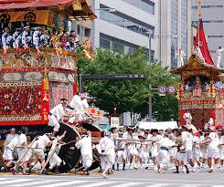
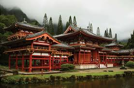
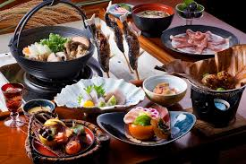

Japanese culture is a harmonious combination of old and new, traditions and innovations, reflecting the specific history and ethical values of the country. A core feature of Japanese culture, therefore, is respect for nature, and many ancient activities, such as the tea ceremony (chanoyu), show different ways in which this respect manifests. Its central features are mindfulness and aesthetic appreciation of nature-beauty of coming season in flowers, tranquility of making tea. Festivals, or matsuri, are also very essential in Japanese life, where Hanami (flower viewing) festivals draw attention to the transience of beauty in cherry blossoms. Families gather in the park for picnics under blooming sakura trees in spring, which encourages community and appreciation for the transience of natural beauty.
Japanese art and architecture are simple yet elegant, which expresses minimalism in forms that are traditional, such as calligraphy (shodo) and ink painting (sumi-e). Wabi-sabi aesthetics, or the beauty of imperfection, is represented in pottery, landscape gardening, and even architecture, where wooden shrines and temples are made to blend with the surroundings and evoke both serenity and spirituality, which forces man to ponder and ponder over spiritualism.
Similarly, other culinary traditions in Japan carry equally significant status as it represents seasonal ingredients and individualistic preparations. Sushi, ramen, and kaiseki are more than foods; they are cultural experiences that come by a combination of both presentation and flavor harmony. Food plays a big part in Japanese festivals, with specialties like mochi and dango for the observance of seasons. The concept of omotenashi or selfless hospitality is deeply instilled in the psyche of Japanese society, ensuring that guests are warm and valued. All this ensures that the ethos continues to be part and parcel of the Japanese society today.
